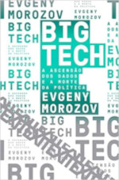

moneyzgone.com
Livros de Tecnologia
-
- Inteligência Artificial, Robótica, Internet das Coisas, Nanotecnologia, Biotecnologia, Veículos Autônomos, Impressão 3D, Realidade Virtual...o mundo está passando, mais uma vez, por mudanças importantes graças aos avanços tecnológicos acumulados ao longo de milhares de anos
- Ensino Híbrido: Personalização e Tecnologia na Educação
- Ensino híbrido: personalização e tecnologia da educação é um livro feito por professores para professores.
- Big Tech: A ascensão dos dados e a morte da política
- Reunião dos principais artigos de um dos mais influentes especialistas em tecnologia e em internet do mundo, Evgeny Morozov. Big tech problematiza a lógica do chamado "solucionismo" tecnológico, que enxerga a tecnologia como panaceia para problemas que instituições falharam em resolver.
Futuro Presente: O mundo movido à tecnologia
Edição Português | por Guy Perelmuter | 2 dez 2019
Preço: R$25,00 comprar
Ensino Híbrido: Personalização e Tecnologia na Educação
Edição Português | por Lilian Bacich, Adolfo tanzi Neto, e outros.| 17 maio 2015
preço:R$ 45,99 compra

Big Tech: A ascensão dos dados e a morte da política
Edição Portugês | por Evgeny Morozov | 4 dez 2018
preço:R$ 31,41 Compra
inicio